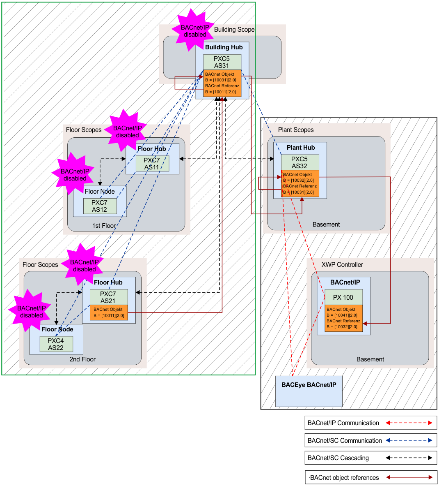

Revising data communication between BACnet/SC – BACnet/IP
为了使 BACnet 对象能够在 BACnet/SC 和 BACnet/IP. 之间进行通信，需要建筑物集线器。级联不允许楼层集线器和工厂集线器之间直接通信。在这种情况下，通信必须通过建筑中心进行路由。具体来说，这意味着必须将对 2 楼 Floor hub 中的对象的 BACnet 引用添加到建筑中心。建筑中心接收自己的 BACnet 对象，其中 BACnet 引用了二楼楼层中心的 BACnet 对象。新的 BACnet 对象现在是对 Plant Hub 中 BACnet 对象的 BACnet 引用。现在，我们在 Plant Hub 中有一个可见的 BACnet 对象，可以由 BACnet/IP 设备引用。在这种情况下，需要 BACnet/SC 和 BACnet/IP 之间通信的每个对象都必须通过 Building Hub 和 Plant Hub 进行引用。换句话说，数据通信是使用两个“辅助 BACnet 引用来实现的。我们需要三个 BACnet 引用，而不是一个来交换数据。工作流程纯粹通过 BACnet/SC. 操作整个 BACnet/SC 网络。控制器和 BACnet 对象（以绿色突出显示）在 BACnet/IP. 上都不可见。

从建筑中心到楼层节点的 BACnet/SC 连接说明了仅描述功能的视觉通信路径。数据始终通过楼层集线器传输！
